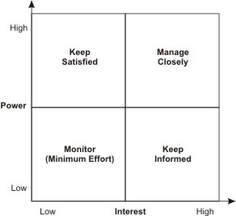

These are the adults who are involved with my project and responsible for my success.
Contacts
- Classroom Teacher: Mrs. McKinnis
- Jerry Ingram, Troop Coordinator
- Margaret Antushevich 231-436-4100
- Paul Trosper, Assistant Scoutmaster
- Bill Pschigota, Scoutmaster
Stakeholders Analysis
This page enumerates the people and groups who will be affected by my project, either directly or indirectly. The number in the priority column indicates the level of impact. A number 1 designates a primary stakeholder, who will be directly impacted by my project. A number three indicates a tertialry stakeholder, who is indirectly and nominally impacted by my project.
The steps of Stakeholder Analysis are explained below:
-
Identifying Your Stakeholders:
The first step in your stakeholder analysis is to brainstorm who your stakeholders are. As part of this, think of all the people who are affected by your work, who have influence or power over it, or have an interest in its successfull or unsuccessful conclusion.
Remember that although stakeholders may be both organizations and people, ultimately you must communicate with people. Make sure that you identify the correct individual stakeholders within a stakeholding organization.
-
Prioritize Your Stakeholders:
You may now have a long list of people and organizations that are affected by your work. Some of these may have the power either to block or advance. Some may be interested in what you are doing; others may not care.
Map out your stakeholders on a Power⁄Interest Grid on our free template, and classify them by their power over your work and by their interest in your work.
For example, your boss is likely to have high power and influence over your projects and high interest. Your family may have high interest, but are unlikely to have power over it.
Someone's position on the grid shows you the actions you have to take with them:
- High power, high interest: these are the people you must fully engage and make the greatest efforts to satisfy.
- High power, low interest: you should put enough work in with these people to keep them satisfied, but not so much that they become bored.
- Low power, high interest: keep these people adequately informed, and talk to them to ensure that no major issues arise. These people can often be very helpful with the details of your project.
- Low power, low interest: Monitor these people, but do not bore them with excessive communication.
-
Understanding Your Key Stakeholders:
You now need to know more about your key stakeholders. You need to know how they are likely to feel about and react to your project. You also need to know how best to engage them in your project and how best to communicate with them.
At the end, group your stakeholders. Stakeholders can be grouped into these categories:
- Primary Stakeholders — those involved in every aspect of the project and the recipients of the service.
- Secondary Stakeholders — those involved in some of the aspects of the project.
- Peripheral Stakeholders — those that may not have helped implement the project, but are a resource. They may not feel that they have much to gain from your project, but are nonetheless supportive.
Stakeholders
| Stakeholder | Interest | Priority | Influence | Strategy |
|---|---|---|---|---|
| Boy Scouts of America | To be well represented | 1 | + | To represent, work for, and with the Boy Scouts of America organization while on Mackinac, while complying with all BSA policies. |
| Michigan State Parks Dep't | Maintenance and Service | 1 | + | To provide consistent and capable service to the Park and Parks Service through tour and flag details. |
| Mackinac Tourist | To be assisted and facilitated | 2 | + | To provide cheerful, and capable assistance and direction to the tourists of Mackinac Island. |
| Mackinac Carriage Tours | Marching patrols can frighten horses | 3 | – | To provide a cheerful face to those on tour and helpful reference to the offices, as well as delivering mail and pamphlets for this organization. |
| Mackinac Art Museum |
We work the front door;
Thus we are their first impression |
2 | + | To provide dutiful guide duty outside this post from ten each morning until five thirty each evening. |
| Troop 629 |
50 years service;
continuation depends on performance |
1 | + | To uphold the standards of Troop 623 through daily inspection, supervision of tour guide duties, and empowered leadership from the Scouts. |
| Scout Coordinator |
Maintenance of barracks;
Performance |
1 | + | To provide maintenance of the Scout Barracks and fulfillment of the necessary duties while on the island. |
| Guest Service Reps | BSA performs some of their tasks | 2 | 0 | To provide a dinner and entertaining kickball game on Thursday, as well as daily contact and assistance at guideposts. |
| Boy Scouts' Parents |
Training their boys in service;
care of their children for a week |
3 | + | To provide training and mentorship in accordance with BSA standards to the young Scouts of the contingent. |
| 56 Boy Scouts |
Work and serve together;
Compete and cooperate as patrols |
1 | + | To train, mentor, unify, and lead the boys in a cohesive movement forward as a Troop with established and common goals on the Island. |
| Mackinac Island Businesses | Scouts direct toursits to shops | 2 | + | To provide respectful patronage while off duty and informed directions and advice to all tourists inquiring about these businesses. |
| 6 Adult Leaders | Form a successful team | 1 | + | To provide reliable junior leadership and open to communicate to assume the burden of responsibility. |
| Horses | Get spooked by groups marching | 2 | – | To inform the Scouts as to the dangers and requirements to passing horses safely. |
| Culver Academies |
I represent CMA at al times;
I spoke to a hopeful student on Mackinac. |
1 | + | To behave in a manner befitting a Culver gentleman, to lead by example, to communicate clearly, and to represent Culver to the best of my ability each day. |
| Shepler's Ferry | We take up half a boat to move the troop. | 2 | – | Provide respectful and deferential seating, respect the other tourists, and quickly embark and disembark the ferry. |